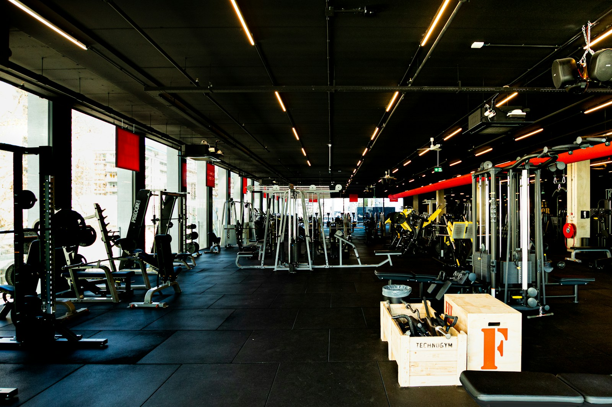
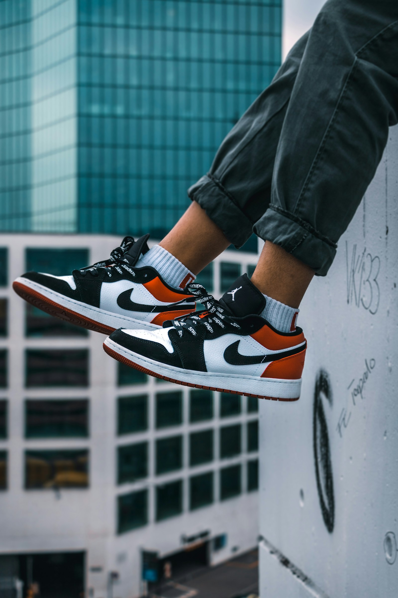
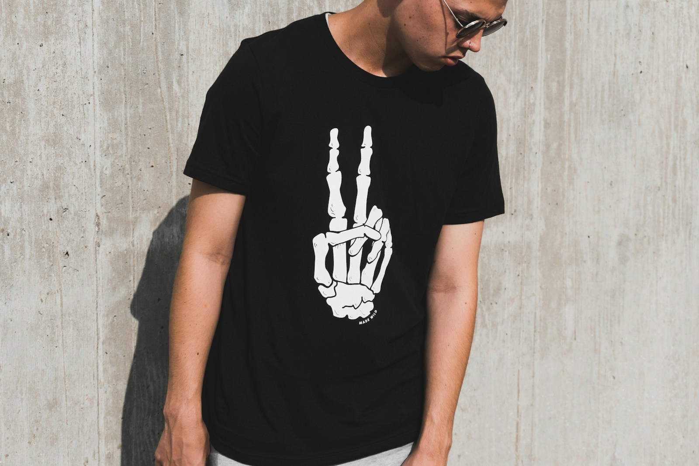

The 7-step JTBD, with 10 new AI features layered in
The existing Freddie flow is: Plan → Strategize → Design → Refine → Send. Phase 1 deepens each step. You'll see live-context connectors feed the Plan, Brand Voice 2.0 shape the strategy, AI Image Manipulation and Dream Lab transform the Design step, Conversational Editing carry refinement, and MCP Bridge expose the whole thing to ChatGPT / Claude / Cursor.
Press Next to step through. Use ← / → on your keyboard. Click the lit hotspot in each scene to advance via the same path a real user would take.
AI Image Manipulation Suite
Edit images directly inside the email. Brush-replace a region,
extract a subject from its background, extend the frame in any direction,
or apply themed text and shape effects. The new C-97 popover is anchored to the
selected image element — the only genuinely new shape this whole phase introduces.
Built Stride's Spring Velocity email — city-run hero, Volt + bundle story. Click any canvas element to edit it.
C-61) is unchanged; the new behaviour is the selection state that activates when you click an image.
A selection ring is now around the hero. Choose an action from the popover.
C-97) anchors to the selected element; chat shows the staged preview-diff (C-43/v.preview-diff); follow-up chips (C-70/v.refine-chips) carry conversational refinement intents. Click Brush replace in the popover — or Accept the chat-staged change.
Regenerating the painted region with brand-aware imagery.
Brush-replaced the hero region with a more polished result. Accept to commit, or regenerate.
Staged · not yet committed
C-44 feedback row supports thumb-up/down for AI quality learning.
The change is committed. The popover is available again for the next edit.
AI Image Manipulation Suite
You selected the hero, opened the new C-97 popover, brush-replaced a region,
staged the result via C-43/v.preview-diff, and accepted. Zero round-trips to Canva.
One new C-ID introduced; everything else reuses existing primitives.
Dream Lab
Generate high-fidelity branded imagery from a prompt + your own style reference + aspect ratio. Lives as the new "Image" tab in the manual mode left rail.
C-71 — no new shape.
C-58 viewport radio) + style preset chips. Click Generate image.
Generating 4 candidates from your prompt and brand style…
Using Stride Athletics brand palette · Editorial preset · 4:5 aspect
C-42 snowflake spinner used elsewhere. Brand context is shown so the user knows what inputs the model is using.
C-52 visual style picker pattern reused. Click outside the picker to dismiss or pick a result to commit.
C-61 canvas image block; C-97 image manipulation applies to it for further edits. Recent generations persist in Brand Kit.
Dream Lab
You generated 4 candidates from a prompt + style reference + aspect ratio, picked one, and dropped it into the canvas. Zero new C-IDs. Two variants: C-71/v.image-tab + C-58/v.aspect.
Conversational Design Editing
Drive the whole builder from plain English. "Make the hero more professional. Shorten the body by 30%. Add urgency to the CTA." The existing chat composer (C-54) becomes the primary edit channel; the new C-43/v.preview-diff variant shows before/after thumbnails before commits.
Type a change, or pick a refine chip below.
C-70/v.refine-chips) seed common intents. The chat composer accepts free-form text as well.Shifted color grade toward Stride teal, tightened the Spring Velocity headline. Canvas un-touched until Accept.
Original · pending replacement
C-43/v.preview-diff embeds before/after thumbnails inside the assistant message. Canvas dims to signal "staged, not committed."Canvas now reflects the change. What's next?
Removed two paragraphs, kept the social proof. Canvas updated.
Conversational Design Editing
You drove two refinements through chat — restyle hero, then shorten copy. Each shown as preview-diff (C-43/v.preview-diff) before commit. The chat thread is now the campaign's edit history.
Magic Layers
Drop a flat file (JPG, PDF, HTML) onto the composer's + attach button. AI detects sections and reconstructs them as editable layered blocks. The cleanest feature in the spec — zero new C-IDs.
Generate emails with Mailchimp AI
Or drop a flat artifact to reconstruct as editable layers.
Tip: paste a lookbook JPG, a PDF brief, or an old HTML template — e.g. stride-spring-lookbook.jpg.
stride-spring-lookbook.jpg.
C-20 attach button accepts new file types (jpg/pdf/html) in addition to existing ones. No new shape needed.
Flat reference attached — sections are being peeled into editable blocks.3 sections detected: ✓ Header · ✓ Hero · ⌛ Body · ⋯ Footer (next)
C-23) gains a progress + per-section status state. No new shape, just new content states.Reconstructed from stride-spring-lookbook.jpg. Detected: 1 Header · 1 Hero · 2 Body · 1 Coupon · 1 Product Grid · 1 Footer. Brand Kit applied — your logo replaced theirs, colors normalized to your teal/cream palette.
C-43) summarizes the detected sections. The new C-53/v.open-as-editable variant routes to manual mode with pre-populated blocks.C-61) and can be edited by C-72, C-97, conversational editing (feature 03), or any other Phase 1 feature.Magic Layers
You dropped a flat artifact and got 7 editable blocks with your brand applied. Zero new C-IDs. Two variants: C-23/v.ingestion-progress + C-53/v.open-as-editable.
Brand Voice 2.0 + Brand Intelligence
Save named brand-voice profiles (Default · Holiday · Launch). Auto-detect tone, voice, do's and don'ts from your URL. When the brand changes, a broadcast banner offers one-click "update all old templates."
Pick the section you want to edit
The new Brand Voice 2.0 tab adds profile management + Brand Intelligence auto-detection.
C-81) with its 7-tab left nav (C-82) unchanged. Brand Voice gains the new "2.0" tag.Brand Voice 2.0 C-89/v.profile-picker
Save and switch between brand-voice profiles. AI generations will use the active profile by default.
Auto-detected from your URL last week: Tone warm + confident · Voice first-person plural · Avoid jargon, em-dashes · Length 8–18 words avg
C-89/v.profile-picker), Brand Intelligence auto-detect card, and the cross-campaign broadcast banner (C-23/v.brand-update-broadcast). Click Update all 12 to demo the broadcast.All previously-versioned drafts now reflect your latest brand voice. Banner dismissed; drafts list refreshes in your conversation history.
brandVersion field on each draft is bumped to current.12 drafts updated
Every draft now reflects your Default Brand Voice 2.0 profile. Click any draft in the sidebar to preview the change.
C-11) shows the updated drafts at the top of "Today" with refreshed timestamps. No invented UI — existing list pattern carrying new content.Brand Voice 2.0 + Brand Intelligence
You activated a named profile, saw the Brand Intelligence auto-detect card, and broadcast the new brand to 12 drafts. Two variants registered. Zero new C-IDs.
Mailchimp Memory · Living Memory
AI remembers what works for your team across campaigns. A new "Things I remember" entry in the sidebar opens a drawer of facts; memory chips surface in the composer to seed future generations.
A new entry in the sidebar
Persistent memory across all your campaigns. AI learns your team's preferences and surfaces them as suggestions.
C-9) gets a new persistent entry (C-11/v.memory-entry) with a count badge and NEW pill. Same list-item molecule as Today/Yesterday conversations.Style · 4 memories
Customers respond best to social-proof framing
Saved May 8 · used in 6 campaigns · Marked helpful 4×
Hero CTAs work best in active voice
Saved Apr 22 · used in 11 campaigns
Avoid red on hero CTAs (brand mismatch)
Auto-learned · brand kit conflict
Product photos > illustrations for ecom
Saved Mar 14 · used in 8 campaigns
C-82) with 6 memory categories. Each memory is editable, deletable, or trainable through feedback.Generate emails with Mailchimp AI
Turn ideas into ready-to-send campaigns.
C-25/v.memory) and a live-context banner (C-23/v.live-context-banner) seed every generation with team-learned context. Click a memory chip.The memory is now part of the prompt. AI will use last week's confident-but-warm tone for the Spring Velocity send.
Train in rhythm this spring
C-45) gains a memory-count chip so the user sees what context the AI drew on.Mailchimp Memory
You opened the memory drawer, saw memory chips surface in the composer, applied one, and saw the strategy panel reflect the memories used. Three variants registered. No new shapes.
Live-Context Connectors
Connect Slack, Drive, Notion, Zoom, Calendar. AI pulls live context — the latest launch brief in Notion, this week's marketing standup in Slack — directly into every campaign prompt.
C-91) gains a Connectors section. Each row is a variant of the existing experience toggle (C-92/v.connector-toggle) with a service logo + last-sync timestamp.Connect Zoom to Mailchimp?
Read meeting transcripts to inform campaign briefs. No write access. You can revoke anytime.
C-42 spinner used elsewhere.Generate emails with Mailchimp AI
Live context from all your connected sources is included in every prompt.
Live-Context Connectors
You connected Zoom, watched it index, and saw the banner reflect 4 live sources. Two variants registered.
AI Sticker / GIF / Animation
Generate branded sticker packs + one-click hero animations. Lives as a 5th tab in the manual rail. Stickers persist in Brand Kit for reuse across campaigns.
C-71 variant pattern as Dream Lab.Generating 8-sticker pack…


Click a sticker to drop it in the canvas. The pack is saved to your Brand Kit.
C-72 tile grid pattern. Each sticker drops into the canvas as a regular image block.AI Sticker / GIF / Animation
You generated an 8-sticker pack and dropped one into the canvas. Two variants registered. Composes entirely from existing primitives.
Web Research Integration
Before generating, AI searches the web for competitive, seasonal, and trend context. A new "Research depth" field in the strategy panel lets you pick None / Quick / Deep.
C-46 select pattern. 3 options: None, Quick, Deep.Scanning 12 sources on athletic DTC launch best practices…
Industry benchmarks · Reddit · Mailchimp internal data
1. Q3 2025 industry-avg open rate for welcome emails = 47% (your benchmark target).
2. Top-performing welcome emails reference the user's signup source within the first 3 lines.
3. Including a single CTA (vs 2+) lifts CTR ~15%.
C-43 prose pattern. Citations link out via existing C-55 disclaimer-link style.Web Research Integration
You picked Quick depth, saw the research turn, and got 3 findings before generation. One variant.
ChatGPT & Claude MCP Bridge
Expose Mailchimp campaign creation as an MCP server. A marketer working in ChatGPT, Claude, or Cursor can hand off "draft a welcome email for my MC audience" and pull back the rendered draft.
Let ChatGPT, Claude, or Cursor call Mailchimp directly.
C-91) grows a 3rd section. Same labeling pattern as Experiences and Connectors.Bearer token
Last used 4 minutes ago by Claude 4.5 (Cursor)
📖 Connection guide →
C-90/v.mcp-token-row) is a variant of the social-link input row from Brand Kit. Last-used metadata + connection guide link.Paste it into your external AI client's MCP configuration. Mailchimp now appears as an addressable tool in Claude / ChatGPT / Cursor.
ChatGPT & Claude MCP Bridge
MCP server enabled, token issued, external client connected. Two variants registered.
Here's what we built today.
One email that uses all 10 features: Brand Voice 2.0 shaped the tone · Memory seeded the prompt with team learnings · Live-Context Connectors pulled the Q3 launch brief from Notion · Web Research brought in the 47% open-rate benchmark · Dream Lab generated the hero · AI Image Manipulation brush-replaced a region · Conversational Editing refined the copy · Magic Layers reconstructed Stride's stride-spring-lookbook.jpg · Stickers dropped a Spring Velocity tile · MCP Bridge exposes the whole thing to external AI.
Ready to send?
Recipients: New email subscribers (2,150)
From: Stride Athletics <hello@stride-athletics.example.com>
Subject: Spring Velocity: Volt Runner ships free this week
Brand Voice: Default · Brand kit applied · footer verified
Closes the pre-mortem #4 gap (audience-confirmation modal at Send).
Your email is on its way.
2,150 recipients · Stride Athletics · Spring Velocity launch
The entire workflow stayed in Freddie. No Canva round-trip, no manual copy-paste, no compliance gaps.
Refine via chat. Image-related intents (Swap hero / Image edits) are not available on SMS — text only.
Stride: Spring Velocity — Volt Runner $128 + free ship on Life Bundles thru Sun. Code SPRINGVEL. Reply STOP to unsubscribe.
154 / 160 chars · 1 segment
C-54) and refine chips (C-70/v.refine-chips). Image intents are disabled and labeled "N/A on SMS" — honoring R4 channel parity by physics.Stride: Spring Velocity — Volt Runner $128 + free ship on Life Bundles thru Sun. Code SPRINGVEL. Reply STOP to unsubscribe.
Stride: Volt $128 · bundle ship-free this week · SPRINGVEL · STOP to unsubscribe
Stride: Spring Velocity — Volt Runner $128 + free ship on Life Bundles thru Sun. Code SPRINGVEL. Reply STOP to unsubscribe.
Original · pending replacement
C-43/v.preview-diff pattern, but text-only instead of thumbnail-paired. Character count shown alongside.Volt $128 + bundle ship-free this week. Code SPRINGVEL. Reply STOP to unsubscribe.
98 / 160 chars · 1 segment
24hr only: Extra 10% off Volt with SPRINGVEL. Reply STOP to unsubscribe.
94 / 160 chars · 1 segment
Default profile
Spring Velocity encore: Volt $128 + bundle ship-free. SPRINGVEL. Reply STOP to opt out.
Launch profile active
Final call: Spring Velocity ends tonight — SPRINGVEL on Volt + bundles. STOP to opt out.
Generate SMS with Mailchimp AI
Turn ideas into ready-to-send texts. Memory chips work the same way as Email.
Generate SMS with Mailchimp AI
Connectors are workspace-level — every channel sees the same context. SMS prompts inherit the launch tone the team set in Notion.
Research informs SMS just like Email — competitive opens, peak engagement windows, opt-out copy norms.
C-46/v.research-depth field. SMS-specific length-target row is a regular C-46.MCP is workspace-level. The same bearer token lets external clients author Email, SMS, and WhatsApp campaigns.
Click the image to edit inline. Same C-97 popover as Email.
Stride Athletics
Spring Velocity lookbook — tap the image for edits.
Dream Lab generates 9:16 aspect-ratio images for WhatsApp Status posts. Same C-58/v.aspect control.
Generate WhatsApp with Mailchimp AI
Drop a flat image to reconstruct as a WA-friendly post.
Stride Athletics
Spring Velocity · Volt & Pierce in stock
Stickers are native to WhatsApp. The same generator produces packs that work as standalone messages, replies, or reactions.